12 mai 2025 → 4 juillet 2025 · Villefranche-sur-Saône
Développement web au sein d'une agence spécialisée. Projet principal : SportyGo, une plateforme de petites annonces sportives permettant de créer et rejoindre des événements collectifs.
Découverte de l'environnement de travail et prise en main des outils : PhpStorm, GitLab (workflow en branches), Slack, WampServer/phpMyAdmin et SMTP4Dev pour tester les envois de mails.
Le projet SportyGo utilise le micro-framework Fat-Free (F3) en architecture MVC. J'ai intégré une Progressive Web App (PWA) en créant le manifest.webmanifest et le service worker sw.js pour rendre le site installable sur mobile et utilisable hors-ligne.
Développement du menu dropdown « Mon compte », de la page « Mes annonces » et sécurisation des routes via access.ini. Participation à un rendez-vous client pour le CRM Gesy et rédaction d'un PowerPoint de synthèse.
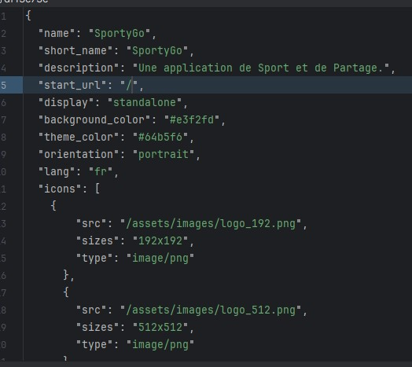
Fichier manifest.webmanifest — configuration PWA
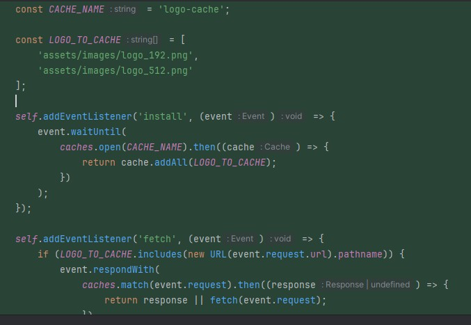
Service Worker (sw.js) — gestion du cache offline
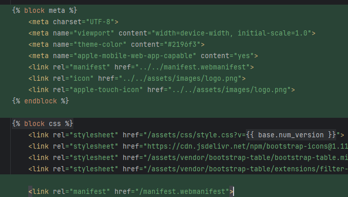
Balises meta et link pour compatibilité mobile
Optimisation de la page « Mes annonces » : tri chronologique décroissant via requêtes SQL et pagination avec offset/limit. Création d'une page de contact avec formulaire d'autocomplétion en Bootstrap.
Mission principale : conception d'une messagerie privée entre utilisateurs. Après étude de WebSocket (Node.js), choix d'une solution PHP + HTMX avec rafraîchissement automatique. Interface deux colonnes style Slack/WhatsApp, gestion de l'état lu/non-lu avec champ is_read en base de données.
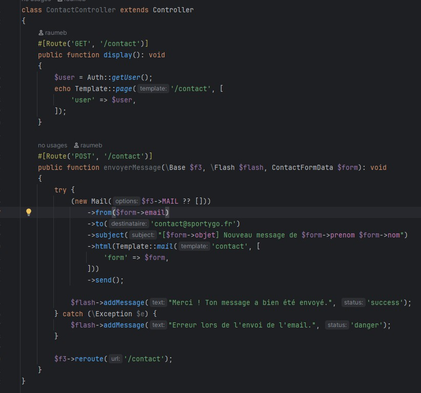
ContactController — envoi de mail via formulaire
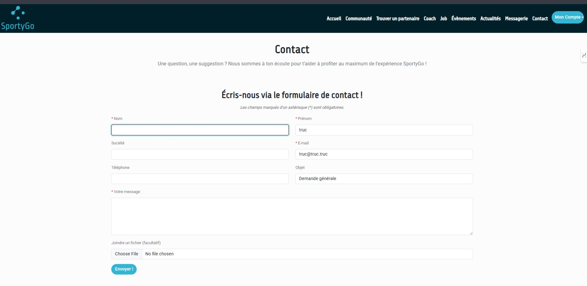
Interface de messagerie (style Slack/WhatsApp)
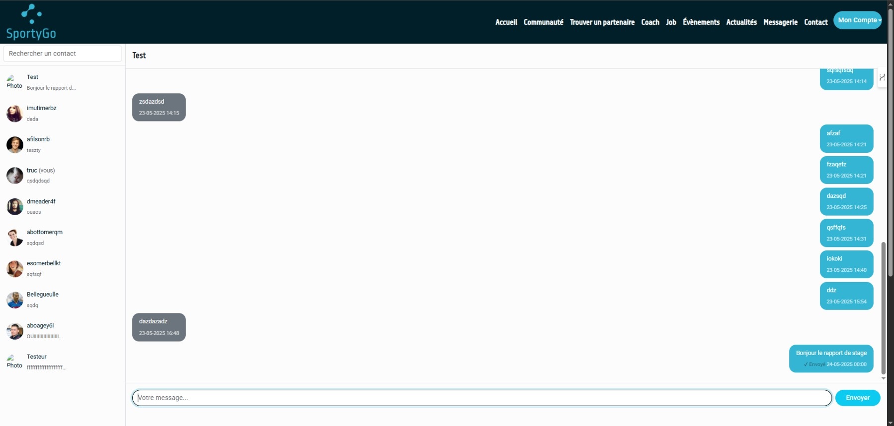
ChatController — routes et logique messagerie
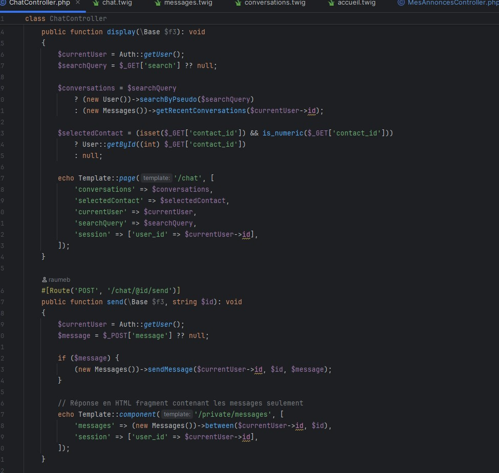
Template Twig du chat — structure deux colonnes
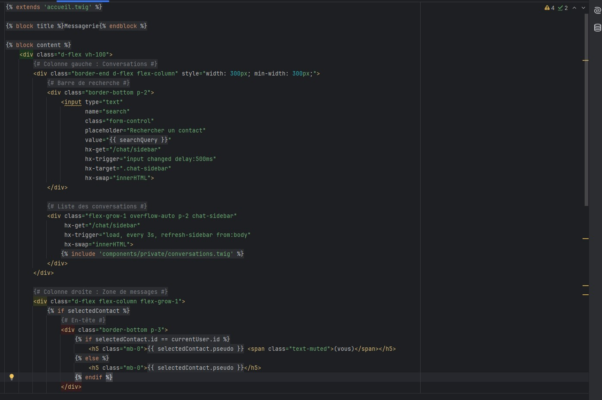
Optimisation Bootstrap et gestion des états de lecture
Implémentation d'un système de notifications pour informer les utilisateurs des nouveaux messages. Ajout d'un champ last_read_at par utilisateur et par conversation pour détecter les messages non lus.
Gestion des cas particuliers : une conversation supprimée localement (masquée) ne doit plus déclencher de notification. Affichage conditionnel d'une pastille dans la barre de navigation via HTMX.
Intégration de Leaflet.js via npm et Webpack Encore pour une carte interactive des profils sportifs. Configuration du clustering de marqueurs et liaison avec la recherche HTMX.
Conception de la structure de base de données pour le chat de groupe lié aux annonces. Sur conseil du maître de stage, unification dans une seule table message avec les colonnes annonce_id et receiver_id nullables.
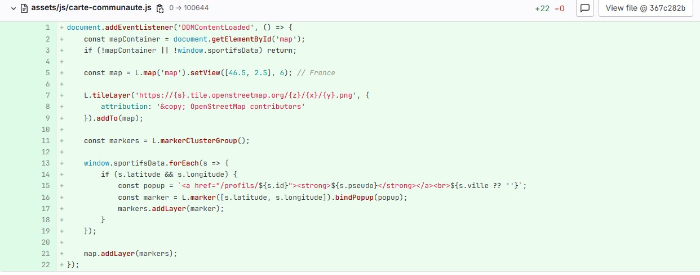
Carte communauté avec Leaflet.js + MarkerCluster
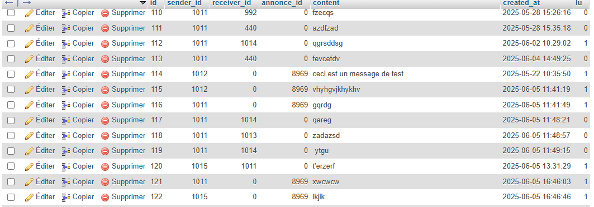
Structure unifiée de la table messages
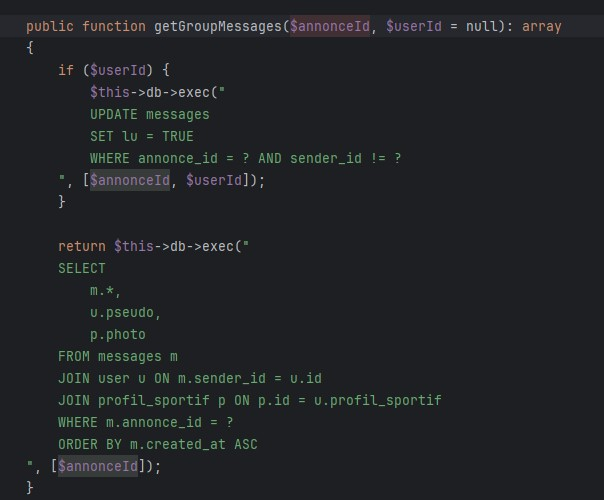
Méthode getGroupMessages — récupération des messages de groupe
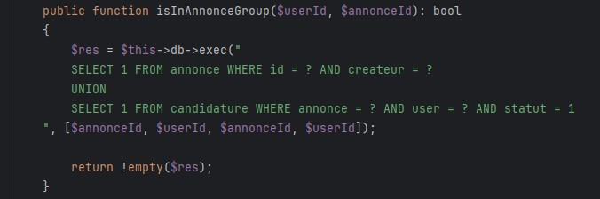
Fonction isInAnnonceGroup — vérification des droits
Refactorisation de toutes les fonctions de chat pour intégrer les conversations de groupe. La fonction getAllConversations() fusionne conversations privées et de groupe, triées par date du dernier message, en excluant les conversations masquées.
Mise en place d'une barre de recherche intelligente (HTMX, délai 300ms), d'une croix de réinitialisation, et d'une colonne publicitaire configurable via la variable Pub_Space pour la future monétisation du site.
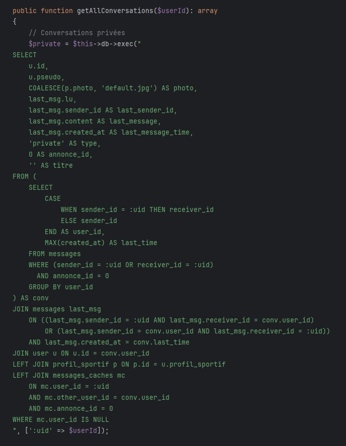
getAllConversations — requête SQL unifiée
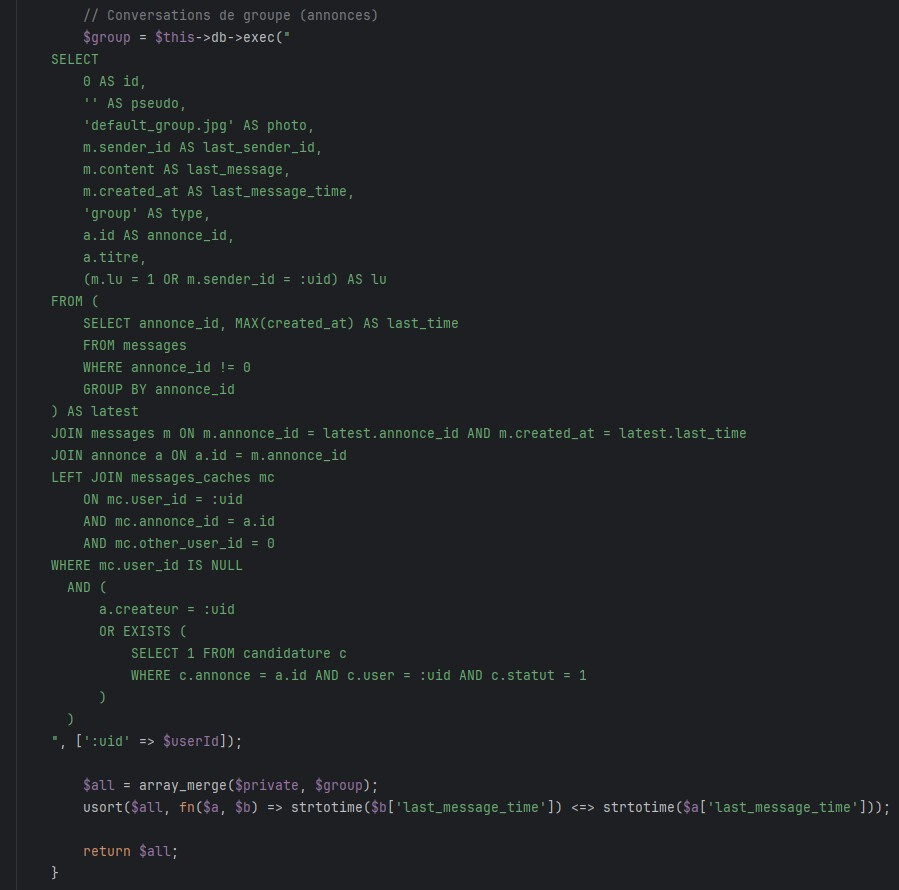
Requête SQL — conversations de groupe par annonce
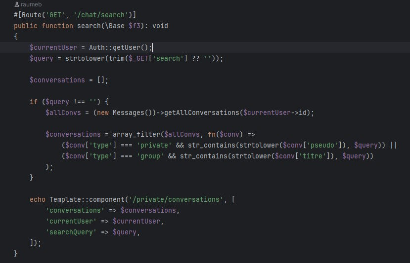
Contrôleur — recherche filtrée dans getAllConversations
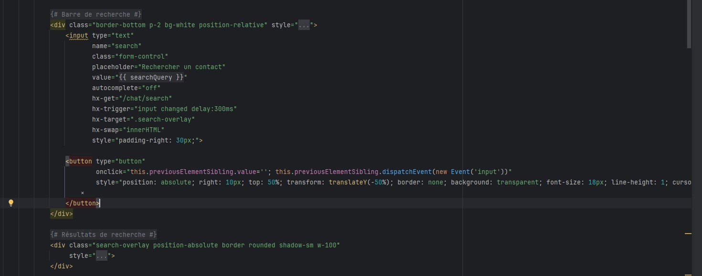
Template Twig — barre de recherche avec croix HTMX
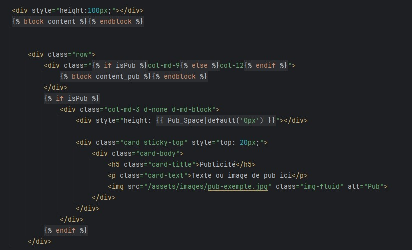
Colonne publicitaire configurable (Twig isPub)
Après une réunion avec le client, priorité donnée à la livraison d'un site stable. Correction de nombreux micro-bugs (merges, messagerie, mails). Mise à jour de la fonction deleteMessages pour les conversations de groupe.
Implémentation de NotificationChat.js : un point rouge s'affiche sur l'icône messagerie dans la navbar et s'actualise toutes les 10 secondes via fetch('/chat/non-lu'). Ajout des photos de profil dans les conversations.
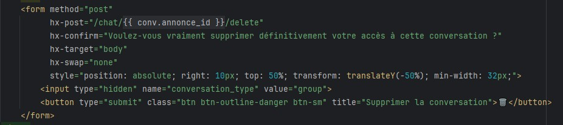
NotificationChat.js — pastille de messages non lus
Semaine entièrement consacrée à l'implémentation des notifications push via la Web Push API — fonctionnalité jamais traitée dans l'entreprise. Travail en autonomie : installation de Minishlink/web-push, génération de clés VAPID avec OpenSSL, création du modèle PushSubscription.php et du PushController.
Mise en place d'un bouton d'activation sur la page paramètres, enregistrement des abonnements en base de données. Le système fonctionne en local, les notifications push sont reçues correctement, mais un problème d'endpoint FCM obsolète reste à résoudre pour la prod.
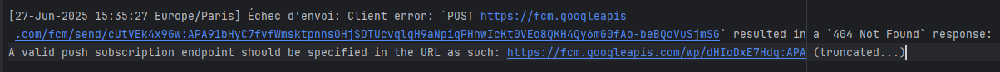
Table BDD — enregistrement des abonnements push